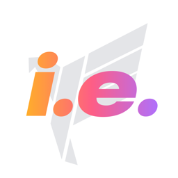

IEstats Support
Stats, scouting and tools for VEX V5 Robotics Competition teams, coaches and parents.
Contact
Found a bug, missing data, or have an idea? Email vstatsVRC@gmail.com. Include your team number and, for a problem at an event, the event's name or code (like RE-V5RC-26-1234).
Getting started
Open Settings → My teams, choose Competitor, Coach or Parent, enter your team number (like 9364E) or, as a coach, your club number (like 9364) for all of its teams, and tap Save. No account is needed.
Common questions
Where does the data come from? Match results, rankings, skills and awards come from the public VEX Events API, so they appear once an event posts them. PowerScale ratings, records and qualifications are rebuilt every night.
What is PowerScale? IEstats' own team rating, built from match results. See Settings → How PowerScale works for how it's calculated and how accurate it is.
How do I see my next match on the Lock Screen? Turn on Settings → Widgets → Live Activity. During a tournament your next matches appear on the Lock Screen and in the Dynamic Island. You can also add the Tournament and Team widgets from your Home Screen.
A qualification says "Likely". Why? Many events don't list their qualifying awards, so IEstats assumes the awards that usually qualify in that region until the event confirms them.
How do I change the app icon? Settings → App icon: pick an icon, then a color scheme, then tap Use.
Privacy
IEstats doesn't collect personal information. Read the privacy policy.
IEstats isn't affiliated with or endorsed by VEX Robotics, the REC Foundation or the Global Robotics & Science Foundation.